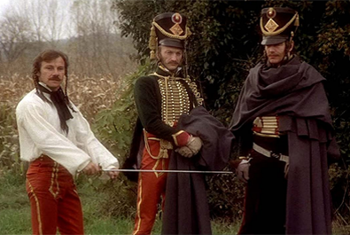
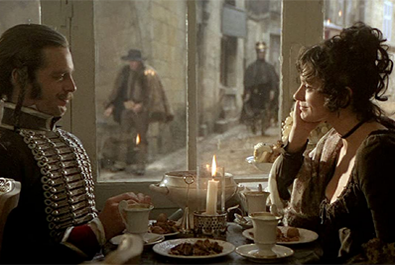
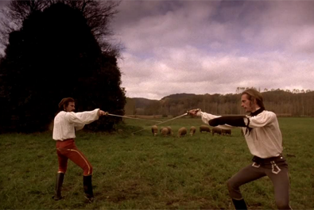
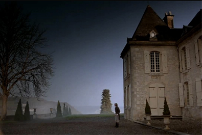
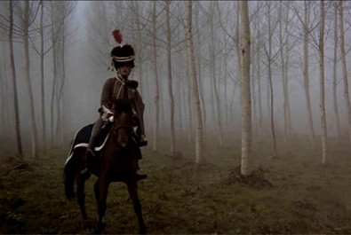
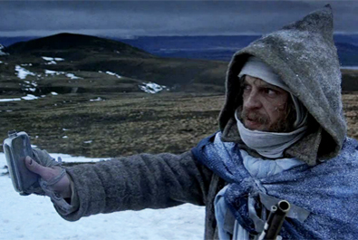

Gerald Vaughan-Hughes


Armand d'Hubert
Colonel Perteley, a Bonapartist agent
Dr Jacquin, army surgeon and friend of d'Hubert
Laura, d'Hubert's mistress
Feraud's mistress
The Chevalier du Rivarol, Adele's uncle
Fencing master


The Duellists would mark the feature film debut of Ridley Scott who had previously worked making TV commercials. Its visual style was influenced by Stanley Kubrick's 1975 historical drama Barry Lyndon. Due to budgetary constraints, Scott decided to shoot the film in a series of tableaux to indicate chapters of the story.
Scott initially hired Gerald Vaughan-Hughes to write a story about Guy Fawkes and the 1605 Gunpowder Plot but, when financing fell through, Vaughan-Hughes adapted the screenplay from the 1907 novella The Duel by Joseph Conrad. The genesis of Conrad's story were the real duels during the Napoleonic era between two officers in France's Grande Armée, Pierre Dupont de l'Étang and François Fournier-Sarlovèze, who became D’Hubert and Feraud in The Duel.
Many exteriors were shot in and around Sarlat-la-Canéda in the Dordogne region of France. The winter scenes set during the retreat from Moscow were shot in the Cairngorms of Scotland, near Aviemore. The final duel scene was filmed at the unrestored Château de Commarque.
The film holds a 92% rating on 'Rotten Tomatoes' based on 24 reviews, with an average score of 7.2/10 and the critical consensus: "Rich, stylized visuals work with effective performances in Ridley Scott's take on Joseph Conrad's Napoleonic story, resulting in an impressive feature film debut for the director." The film has been compared to Stanley Kubrick's Barry Lyndon. In both films, duels play an essential role. In his commentary for the DVD release of his film Scott comments that he was trying to emulate the lush cinematography of Kubrick's film, which approached the naturalistic paintings of the era depicted. Vincent Canby of The New York Times wrote: "The movie, set during the Napoleonic Wars, uses its beauty much in the way that other movies use soundtrack music, to set mood, to complement scenes and even to contradict them. Sometimes it's all too much, yet the camerawork, which is by Frank Tidy, provides the Baroque style by which the movie operates on our senses, making the eccentric drama at first compelling and ultimately breathtaking."
Charles Champlin of the Los Angeles Times wrote that the sword fights were "the best I've ever seen" and called the story "refreshingly different from standard film content." Michael Webb of The Washington Post wrote, "The film has the pictorial beauty and rich period sense of Barry Lyndon, but adds the narrative drive and passion that Kubrick's film lacked." David Ansen of Newsweek wrote, "The best you can say about the film – the directing debut of Ridley Scott – is that it provides an unusually civilised experience in these days of movie barbarism … The worst that can be said is that Keitel and Carradine are so perversely cast as French hussars that, whenever they speak, the splendid illusion of nineteenth-century Europe is shattered."
The film is lauded for its historically authentic portrayal of Napoleonic uniforms and military conduct, as well as its generally accurate early-19th-century fencing techniques as recreated by fight choreographer William Hobbs.
The New York Times placed the film on its Best 1,000 Movies Ever list.

